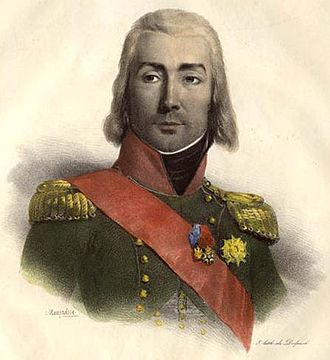
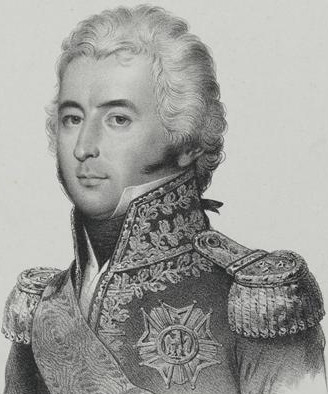

바그람 전투 (제10편) - 초심을 지키다
게시: 2017-08-15T15:22:09+09:00
이렇게 오스트리아군이 모처럼 맞은 절호의 기회를 지휘부의 처절한 무능함 속에서 날려버리는 가운데, 나폴레옹의 머리도 바삐 돌아가고 있었습니다. 비록 많은 사람들이 나폴레옹의 천재성은 이미 끝났다고들 말했지만, 그의 클래스는 살아 있었습니다. 클레나우와 콜로브라트가 주저하며 오스트리아군의 승리를 망치고 있다는 것을 아직 몰랐을텐데도, 그는 이런 위기 속에서 침착성을 잃지 않았습니다.
이런 위기상황에서 보통의 지휘관이라면 후방으로 침입한 클레나우와 콜로브라트를 막기 위해 모든 병력을 동원하는 등 허둥거렸을 것입니다. 더군다나 그에게는 아직 교전하지 않은 병력이 아주 많았습니다. 최우익의 다부 외에도 우디노와 막도날, 외젠과 근위대 등 어제 밤에 장전해둔 탄약이 머스켓 약실에 그대로 들어 있는 병력이 대부분이었습니다. 그러나 이런 순간에도 나폴레옹의 가장 큰 관심은 다부의 우익이었습니다. 이번 전투의 승패는 어떻게 적의 공격을 막아내느냐가 아니었습니다. 적의 이 기습 공격을 분쇄한다고 해도 그건 현상 유지일 뿐, 전쟁을 끝내려면 이번 전투에서 대승을 거두어야 했고 그러자면 원래 의도했던대로 우익의 다부가 제대로 된 묵직한 공격을 퍼부어야 했습니다. 이번 전투의 정수는 다부 쪽에 있었습니다. 이런 뜻하지 않은 위기 상황 속에서도 큰 그림을 잃지 않고 초심을 유지할 수 있다는 것이 바로 나폴레옹의 클래스를 보여주는 점이었습니다.
그는 침착하게 다부에게 전령을 보내 '공격을 서두르라'고 명령한 뒤, 놀랍게도 다른 모든 군단장들 대신 아더클라에서 악전고투 중인 마세나의 제4 군단에게 남쪽으로 이동하여, 그쪽을 돌파해 들어온 오스트리아군을 상대하도록 명령했습니다. 다른 군단들은 그대로 현 위치를 지키게 했습니다.
마세나의 제4 군단은 아더클라에서 벨가르드의 부대와 교전 중이라서 그들에게 등을 보이고 남쪽으로 후퇴하는 것 자체가 큰 모험이었습니다. 왜 이런 말도 안되는 명령을 내린 것이었을까요 ? 가장 단순한 이유는 마세나가 클레나우와 가장 가까왔기 때문입니다. 나폴레옹의 침착성과는 별도로, 상황은 정말 위급했습니다. 그러니 더 동쪽에 있던 우디노나 막도날의 군단을 이동시키는 것은 너무 시간이 걸렸습니다. 게다가 그들을 이동시키면 그 빈자리는 무엇으로 메꾼단 말입니까 ? 궁극의 예비대인 그의 근위대는 정말 최후의 순간까지 예비대로 아껴두어야 했는데, 나폴레옹은 현 상황이 그렇게까지 급박한 것은 아니라고 판단했습니다. 그러니 남는 옵션은 마세나로 하여금 아더클라에 집착하지 말고 다시 남쪽으로 내려가 클레나우를 제압하도록 하는 것이었지요.
그러나 분명히 이미 교전 중인 적으로부터 떨어져나오는 것도 매우 어려운 일이었습니다. 질서있는 전술적 후퇴가 까딱 잘못하다간 진짜 패주로 이어지지 않으려면 솜씨 있는 지휘관이 숙련된 병사들을 지휘하고 있어야 했습니다. 아더클라 전투에서 오스트리아군을 성공적으로 떨쳐내고 후퇴한다고 해도 해결되지 않는 문제가 있었습니다. 마세나는 새벽에 행군해 온 그 길을 다시 되짚어 남쪽으로 내려가야 했는데, 그 길목에는 새벽에는 없었던 것이 버티고 있었습니다. 바로 콜로브라트의 오스트리아 제3 군단이었지요. 이들과 엉겨붙으면 또 끝장이었고, 또 이들을 어떻게든 신속하게 제압해야 했습니다. 게다가 아무 대책없이 마세나가 그대로 남쪽으로 달려가 클레나우의 제6 군단과 맞붙는다면, 마세나와 아더클라 사이는 또 뼝 뚫린 구멍이 생기게 되는 것이었습니다. 그 구멍으로 콜로브라트가 밀고 들어오면 그것 또한 큰 일이었습니다. 나폴레옹은 여기에 대해서 간단한, 그러나 무책임한 해결책을 내놓습니다. 바로 대규모 기병대를 오스트리아군 얼굴에 냅다 집어던져 시간을 벌자는 것이었지요.
이는 완전히 새로운 전술은 아니었습니다. 나폴레옹은 아일라우(Eylau)에서도 위기에 처하자 뮈라의 대규모 기병대를 돌격시켜 러시아군을 상대하게 한 적이 있었습니다. 그때 뮈라의 기병대는 빽빽히 늘어선 러시아군 보병 대오를 관통하여 뚫고 들어갔다가 말을 돌려 다시 뚫고 돌아오는 장관을 연출하기는 했었으나, 정작 그 돌격으로 적에게 입힌 피해는 정신적 충격 외에는 별로 없었습니다. 하지만 그로 인해 소중한 시간을 벌긴 했지요. 이번에도 나폴레옹은 같은 목적으로 기병대를 냅다 집어던진 것입니다.
문제는 이런 무작정 기병 돌격은 기병들의 큰 피해를 수반할 수 밖에 없다는 점이었습니다. 당연히 이 기병대를 맡을 지휘관도 적의 대포알과 머스켓 총탄에 그대로 노출될 수 밖에 없었습니다. 하늘이 내린 기병 지휘관이었던 불꽃 남자 뮈라는 이런 위험천만한 돌격을 언제나 선두에서 지휘했고, 하일스베르크 전투의 경우 뮈라는 지근거리에서 발사된 대포의 산탄에 말을 잃고 낙마하면서 장화 한짝을 잃기도 했습니다. 그렇게 위험을 우습게 여기며 미친 듯한 돌격을 여러번 이끌면서도 부상은 거의 입지 않았지요. 그러나 뮈라는 이 자리에 없었습니다. 이번에 이 위험천만한 임무를 담당할 사람은 예비 기병대 사령관인 베시에르(Jean-Baptiste Bessières)였습니다.

(베시에르입니다. 사실 그가 얌체에 기회주의자일지는 몰라도 결코 겁쟁이는 아니었습니다. 그는 절친이었다가 원수로 변한 란과 결국 같은 운명을 맞게 됩니다.)
기억들 하시겠습니다만, 베시에르는 분명히 뛰어난 기병 지휘관이기는 했습니다. 다만 언제부터인가 전쟁터 최전선보다는 나폴레옹 주변을 알짱거리며 권력에 대한 욕심을 부리다 란(Lannes) 원수로부터 '전투 현장에서는 코빼기도 볼 수 없더니 폐하를 뵈려하니까 떡 나타나네 ?'라는 팩트폭력을, 그것도 나폴레옹 코 앞에서 당하고는 그와 결투 직전까지 갔던 바 있었습니다. 물론 열혈남아 란에 비할 수야 없겠으나 베시에르도 위험 앞에서 꼬리를 말아쥐는 겁쟁이는 아니었습니다. 그러나 나폴레옹 앞에서 그런 모욕을 당한 바로 그 다음날 란이 최전선에서 지휘를 하다 적 포탄에 희생되는 일이 발생하자, 베시에르가 아무리 스스로 떳떳하다고 해도 뭔가 찜찜한 느낌이 없을 수는 없었습니다.
베시에르가 이 명령을 받은 것은 오전 11시 경이었습니다. 그가 맡았던 프랑스군 예비 기병대에는 기병 사단이 3개 있었으나, 그 중 생-쉴피스(Saint-Sulpice)의 사단은 마세나를 지원하러 차출되었고, 아리기(Arrighi)의 사단은 새벽에 로젠베르크가 일으킨 소동 탓에 다부의 우익을 지원하러 간 상태였습니다. 남은 것은 제1 중기병 사단 하나 뿐이었는데, 그나마 여기에는 총 3개 여단 중 생-제르맹(Saint-Germain) 장군의 기병 여단이 후방으로 빠져 있었습니다. 나폴레옹은 부족한 기병대의 머리수를 채우기 위해 아끼고 아끼던 근위 기병대까지 차출해주었으나, 그 준비에도 시간이 부족했습니다. 시간을 벌려고 기병대가 돌격을 하는데, 그 준비에 시간이 걸려서야 되겠습니까 ? 결국 베시에르는 제1 중기병 사단의 2개 여단 2800명을 그 지휘관인 낭수티(Nansouty)의 지휘 하에 돌격시켰습니다. 본인은 일단 뒤에 남았습니다. 어쩌면 란의 영혼이 이 모습을 보며 '내 그럴 줄 알았다'라며 비웃었을지도 모르지요.

(낭수티 장군입니다. 그는 원래 귀족 출신으로서, 나폴레옹의 다른 장군들과는 달리 전장에서 약탈 등으로 개인주머니를 채우지 않은 몇 안되는 청렴한 장군 중 하나였습니다. 그러나 불행히도 청렴했을 뿐 청빈하지는 않아서, 씀씀이는 계속 귀족처럼 살았기 때문에, 나폴레옹 패망 이후 루이 18세 치하에서 급료가 많이 깎이자, 말년에는 경제적으로 무척 쪼들렸다고 합니다.)
낭수티가 돌격해 들어간 곳은 아더클라를 점령한 오스트리아 예비 군단과, 그 바로 남서쪽에 자리를 잡은 콜로브라트의 오스트리아 제3 군단 사이의 공간이었습니다. 이 넓은 공간에는 프로하스카(Prochaska) 중장이 이끄는 오스트리아 사단 1개만 얇게 펼쳐져 있었기 때문이었습니다. 아무리 기병대 수가 부족하다고 해도, 큰 말에 올라탄 덩치 큰 기병들로 구성된 중기병대가 큼직한 군도를 뽑아들고 두두두 달려들어가면 그 정도의 보병들은 쉽사리 돌파할 수 있을 것이라고 생각되었습니다. 그러나 그렇지 않았습니다.
Source : The Reign of Napoleon Bonaparte by Robert Asprey
With Napoleon's Guns by Jean-Nicolas-Auguste Noel
http://www.historyofwar.org/articles/battles_wagram.html
https://en.wikipedia.org/wiki/Battle_of_Wagram
http://www.napolun.com/mirror/napoleonistyka.atspace.com/Battle_of_Wagram_1809.htm#battleofwagram94